In this vignette, we discuss the data loading and processing
performance of the NBDCtools package. We will analyze the
time and memory required for loading data from parquet files and for
preparing them in a ready-to-use format using the
join_tabulated() function.
To illustrate the variability of results, we performed 3 replications of each benchmark statistic reported below, using a server with following specifications:
- CPU: Intel(R) Xeon(R) Gold 6448H (256) @ 4.10 GHz
- RAM: 4TB of DDR5 4400MT/s PC5-38400R 4800MHz
- OS: Rocky Linux 8.10 x86_64
- IO: Data are saved on a network mounted drive with read speed about ~350 MB/s and write speed about ~300 MB/s.
Newer hardware will likely yield better performance, especially with better CPUs, SSDs, and better RAM speed. The results here only present a baseline for the performance. Among these, the most important factor is the IO speed and CPU speed as they will significantly improve the performance of the package.
We hope this information will help you decide how many variables you
can load with a reasonable time and memory usage when creating datasets
using join_tabulated() (or the higher-level wrapper
function create_dataset()). You can use our utility
function estimate_loading() to estimate the needed time and
memory usage for loading a specific number of variables.
IMPORTANT Notes:
This estimate has better accuracy for randomly selected variables than randomly selected tables. For example, using
join_tabulated(tables = ...)orcreate_dataset(tables = ...), will significantly decrease the time and memory needed in datasets with fewer variables. Please treat the statistics as a worst-case baseline.Remember that this benchmark is based on a server with only IO speed of ~350 MB/s. Modern personal computers typically have SSDs with much better speed, like 7000 MB/s or even faster, so the actual time it takes to load a data frame can be significantly shorter.
The benchmarks are derived based on data from the ABCD 6.0 release. The performance will vary with different data releases as the number of rows (participants/events) is increasing with each release. The estimates should not be used the HBCD data, as the number of participant/events is significantly smaller than in the ABCD data. Loading the whole HBCD data would not take much time or memory. Benchmarks may be added in the future for HBCD data as it grows.
Loading data
Loading time
Randomly selected tables
In a first benchmarking scenario, we randomly selected between 20 and
700 tables from the ABCD data dictionary and loaded and joined all
variables from these tables using the join_tabulated()
function. This scenario represents a common use case where researchers
have a specific domain of interest and want to load all variables from a
few selected tables within that domain.
Because the number of variables varies between tables, the plot below displays the results by the number of variables.

Randomly selected variables
In a second benchmarking scenario, we used the
join_tabulated() function to join randomly selected
variables from the ABCD data dictionary, independent of the tables they
belong to. This represents a “worst case” scenario, as the function has
to load and join variables from a larger number of tables.

Memory usage
Memory usage is stable across different runs or across different
machines. The following plot compares memory usage, measured in GB, when
joining random tables vs. random variables. Joining random variables
requires more memory than random tables. This is because joining random
variables typically requires to load more tables than joining random
tables does and R’s garbage collection is imperfect so that some memory
is not released immediately after the data is joined. However, the
memory difference is not significant, and the memory usage is stable
across different runs. Therefore, the following statistics can be used
as gold standard for memory requirements when loading and joining data
using NBDCtools.

Processing data
To create analysis-ready data, all columns should be converted to the
correct type, i.e., categorical columns should be converted to R
factors. This is achieved using the transf_factor()
function in NBDCtools. Here we provide the time and memory
usage for this function.
After the dataset is loaded into memory, the downstream processing speed and memory usage are independent of whether the dataset was created by joining randomly selected variables or randomly selected tables. As such, we do not group by this characteristic in the following plot.

Memory usage
The following plot presents the object size difference after the data
has been loaded and has been processed with transf_factor()
as a consecutive step.

IMPORTANT NOTE: The plot displays the memory needed to represent the resulting object. For example, based on the plot we see that loading 10,000 variables requires about 15.8 GB of memory, and processing it with
transf_factor()requires about 17.6 GB of memory. However, that does not mean that the maximum memory needed while creating that object is 17.6 GB. There are a few instances where the input data is copied during processing, sometimes not only once but multiple times, so the maximum memory usage during processing can be much higher than the final memory usage. We recommend to plan to have 2-3x more memory than is used by the final data frame available on your machine to avoid memory issues during processing.